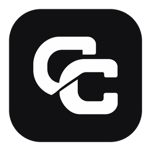

Edit videos. Keep everything.
ClipCut is a free video editor for Windows and Mac. No watermark, no account, no subscription, and your footage never leaves your computer.
Version latest · Windows 10 or newer · macOS 12 or newer · First-launch help
Everything most edits need
Made for TikToks, Reels and Shorts, YouTube videos, tutorials, podcast clips and memes.
Auto-captions
Made on your machine. Pick a model size, get styled captions on the timeline.
Text-to-speech
A free local voice, or clone any voice from a few seconds of a recording.
Background removal
People, objects, or paint the mask yourself.
Keyframes
Position, scale, rotation, opacity, volume and effect parameters, with a curve editor.
100 effects and transitions
Filters, effects and transitions, live in the preview.
Fast cutting
Split, trim, ripple, merge, freeze frame, speed. Magnetic timeline if you want it.
Multi-track
Overlays, picture-in-picture, blend modes, crop and flips on as many tracks as you like.
Titles
Fonts, stroke, shadow, background plate. Presets to start from.
Voice cleanup
Denoise, enhance voice and level the loudness with one switch.
Export
H.264, HEVC and AV1, up to 4K 60 and 10-bit colour.
100% local
Nothing uploads. Your footage never leaves your disk, and it works offline.
26 languages
The whole editor, translated.
Up and cutting in a minute
No sign-up screen stands between you and the timeline.
Install it
Download the installer for your computer and run it.
Drop in footage
Start a project and drag your videos, photos and music in.
Cut, caption, export
Trim on the timeline, add captions and effects, and export up to 4K.
ClipCut updates itself: open Settings › Version and press Check for updates.